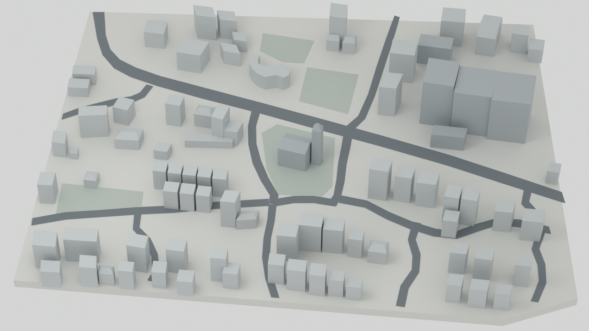

REFERENCE FIRST · MASSING CHECKPOINT
The same city.
Before the details.
A traced building inventory and a separate Blender grey model. Compare the placement of roads, roofs and open grounds before approving any architectural finish.


Loading reference inventory…
What is traced
Blue outlines identify observed roof envelopes. Dashed amber outlines indicate lower-confidence shapes. Cyan lines follow the road boundaries. Choose an area to reduce label clutter.
What is inferred
Building heights, hidden faces and obscured boundaries are estimates. These are modelling coordinates—not surveyed Pune geography. Stepped and curved roofs still need individual reconstruction.
A camera decision to review
The reference has a cut front-right corner and inconsistent cues. Its five-point island outline is traced separately. Neither fit recovers a unique original camera. The existing city’s orthographic camera remains unchanged.
Review 1: representative city section
The approved reference and the current authored section use the same crop. Colour appears only where detail is finished: the synagogue, both café candidates, the surrounding residential and commercial buildings, street trees, crossings, pedestrians and balanced opposing traffic.

Landmark detail

Building-by-building inventory
Select a building ID below to highlight its traced roof. This is the first visible-roof pass; hidden structures are not claimed as complete.
| ID | Reference feature | Roof form | Storeys* | Trace confidence |
|---|
*Inferred for massing only. Review 1 details L01–L03, M05, S13 and S14; remaining buildings deliberately stay grey.